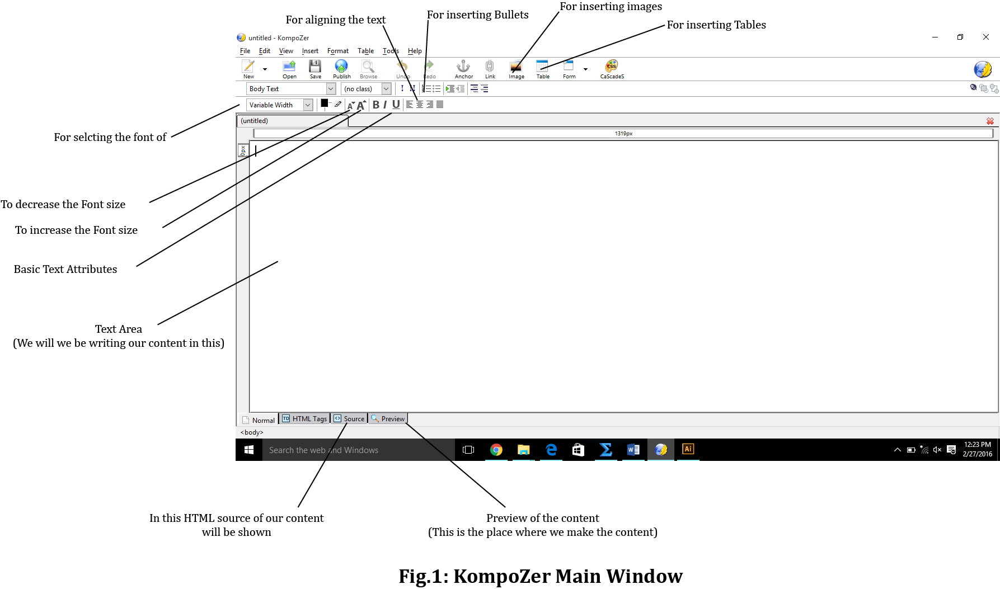
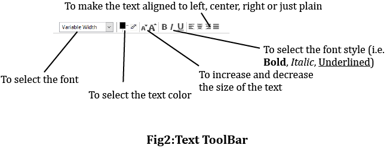
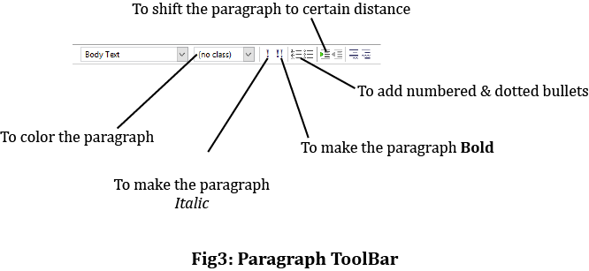
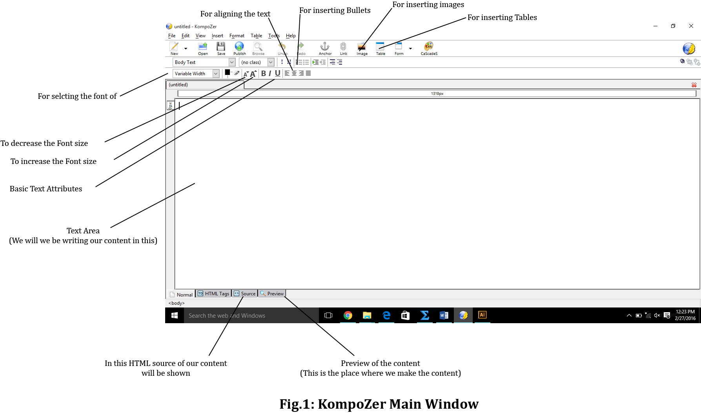
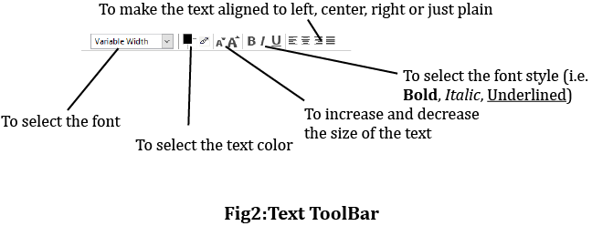
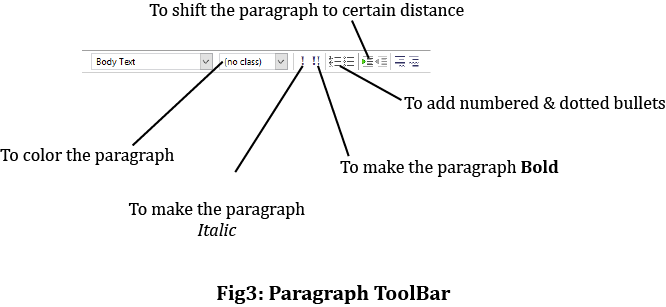
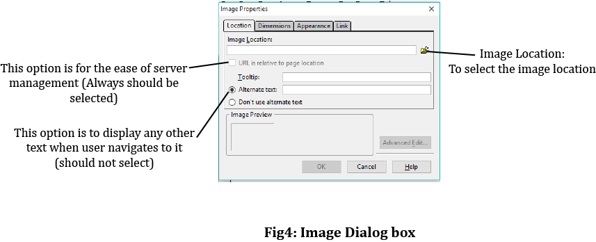
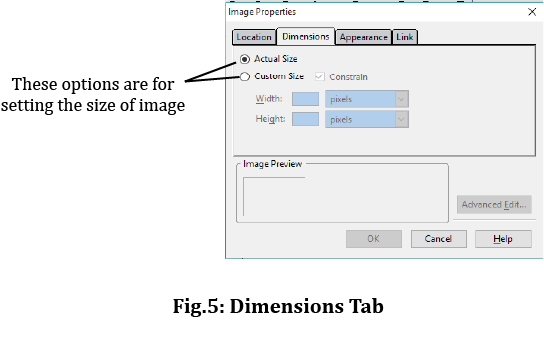
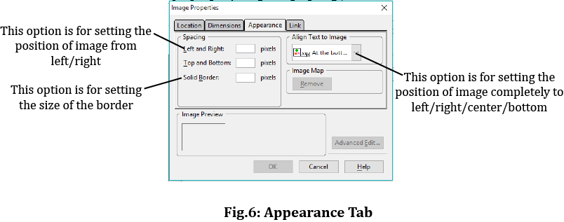
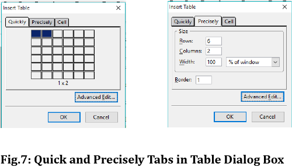

Kompozer Tutorials
Kompozer TutorialsWhat is KompoZer?
KompoZer (call it as composer) is software which is being used to make the webpages without having the knowledge of HTML, i.e., we can design a webpage just as if we are making a word document* (following few rules and adjusting some things).
Outline of KompoZer (Composer):
Composer has wide range of tools, like MS Word's text editing tools, images ...etc., to make a webpage.
First of all select the Preview Tab which is present at the bottom of the window (Shown the image below)

As you can see from the window there are many tools to make a webpage (Zoom the page in case of confusion)
Menus:
There are different kinds of important menus in composer. They are:
ToolBars:
The different kinds of toolbars are as follows:
Text Toolbar:
It consists of tools to re-size, select the style, align, color the text.
Paragraph Toolbar:
It consists of the tools to edit the properties of paragraph.

Creating a File in Composer:
Creating a file in composer is as easy as making a MS Word file.
Inserting Images:
To insert an image, following are the steps to be followed:
*Remember - Image gets inserted from the position where the text pointer is.
Inserting a Horizontal line: This can be done by going to the Insert menu and selecting Horizontal line option
Inserting a table :
In this way we can create our content in webpages without knowledge of HTML using KompoZer.
Credits: Upendra Sai Teja
KompoZer (call it as composer) is software which is being used to make the webpages without having the knowledge of HTML, i.e., we can design a webpage just as if we are making a word document* (following few rules and adjusting some things).
Outline of KompoZer (Composer):
Composer has wide range of tools, like MS Word's text editing tools, images ...etc., to make a webpage.
First of all select the Preview Tab which is present at the bottom of the window (Shown the image below)

As you can see from the window there are many tools to make a webpage (Zoom the page in case of confusion)
Menus:
There are different kinds of important menus in composer. They are:
- File: This menu has options to open a new file, save a file, open a saved file ....etc..,
- Edit: This menu has options like Undo, Redo, Paste, Find, ....etc..,
- Insert: It has options to insert some elements like Images, Tables, Horizontal lines, Characters ....etc..,
- Format: It has options to edit text in terms of font, color, style, spacing between lines ....etc..,
- Table: It has option to edit the tables like inserting them, deleting them, selecting them ....etc..,
ToolBars:
The different kinds of toolbars are as follows:
Text Toolbar:
It consists of tools to re-size, select the style, align, color the text.
Paragraph Toolbar:
It consists of the tools to edit the properties of paragraph.

Creating a File in Composer:
Creating a file in composer is as easy as making a MS Word file.
- First open Composer, new Blank Document is already present in it.
- Now select the Preview tab present in the bottom of the window.
- Now start typing as you do in MS Word.
- At the end save the file using Save option in File menu with the desired name you want.
Inserting Images:
To insert an image, following are the steps to be followed:
- Go to the main toolbar and select Image option.
- A Dialog box of Image(Fig.4) appears.
- In the Location tab select the Image Location option and the select the location of the file.
- Select the option 'URL is relative to page location'.(In case not selected).
- Select the option 'Don't use alternate text'.
- Now navigate to the Dimensions tab.
- Set the size of the Image using Custom Size or select the Actual Size option.
- Now navigate to the Appearance Tab.
- In order to set the position of the image from left/right use Left and Right option.
- In order to set the Border around the image use Solid Border option (but not recomended).
- In order to set the Image completely to left, use Wrap to right option.
- In order to set the Image completely to right, use Wrap to left option.
- Click on OK to insert the image.
*Remember - Image gets inserted from the position where the text pointer is.
Inserting a Horizontal line: This can be done by going to the Insert menu and selecting Horizontal line option
Inserting a table :
- For inserting a table go to main toolbar and select Table option.
- Then you will get a dialog box with Quick tab selected. You can select no. of rows & columns in it.
- If you want more than columns or rows shown in Quick tab, then go to Precisely tab set the no. of columns and rows manually.
In this way we can create our content in webpages without knowledge of HTML using KompoZer.
Credits: Upendra Sai Teja
Copyright ThinkMerit. All rights
reserved.